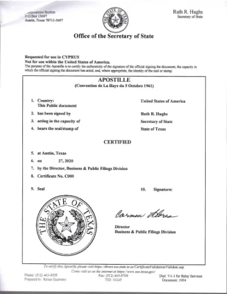

The Rentista Paperwork Mistake That Derails More Moves Than Any Other

By Life in Argentina
Legal team

I can almost predict the moment it happens. An expat lands in Argentina, signs a short-term rental, opens a spreadsheet for the visa, and then realises their key documents still sit back home without apostilles. At that point, every “simple” step starts to stretch.
Delaying legal paperwork is one of the most common and most expensive mistakes I see clients make when relocating, especially with Rentista applications. You pay for couriers, you lose weeks waiting on authorities, and you end up making housing and banking decisions under pressure.
You can avoid most of that stress by treating your documents like a pre-departure deliverable, not an after-arrival chore.
What is an apostille (and why Argentina asks for it)
An apostille is an official certificate that confirms a public document is authentic for use in another country. It does not “approve” the content. It confirms the signature, seal, or issuing authority on the document.
Argentina uses apostilles because both Argentina and your home country (the U.S. and Canada) participate in the Hague Apostille Convention, which standardises how countries recognise each other’s public documents.
Note: You will notice a consistent header that references the Hague Convention on these documents. That visual similarity helps you spot a real apostille quickly when you review your own packet.
Common documents expats apostille for Argentina
For most relocation files, clients most often need apostilles for items like:
- Birth certificates (often long-form)
- Marriage certificates (when you file as a couple, or for family-based processes)
- Name change documents (if your documents show different names over time)
- Notarised letters and sworn statements (financial letters, declarations, authorisations)
- Proof-of-income letters (CPA letters, employer letters, pension statements)
- Certain background checks (case-dependent)
A quick decision map: Who issues your apostille?
Start with the rule that saves people the most time: You must apostille a document through the authority that controls the jurisdiction where the document was issued.
That usually means a state or province for vital records, and a federal channel for certain federal documents.
United States: Five practical examples
In the U.S., apostilles are generally handled by the Secretary of State of the specific state where the document was issued.
-
Texas: The Texas Secretary of State issues apostilles for Texas public records.
Tip: Texas supports online notarisation, which helps when your document needs notarisation before the apostille.
A standard Apostille certificate issued by the State of Texas. - California: The California Secretary of State publishes clear instructions and fees for apostille requests, including mail requests.
-
New York: New York’s Department of State authenticates New York public documents.
Critical Detail: New York often requires a County Clerk step before sending to the state. The Argentine Consulate in NY highlights this point. - Florida: Florida’s Division of Corporations issues apostilles and provides a dedicated page for requests.
- Federal Documents: For items like FBI checks, use the U.S. Department of State - Office of Authentications.
Canada: The post-2024 reality
Canada joined the Apostille Convention in 2024. The process now routes through Global Affairs Canada for some documents and provincial authorities for others.
- Ontario: Directs applicants to Official Documents Services (ODS).
- British Columbia: Runs through the BC Authentication Program. (Warning: Mail requests can take weeks).
- Alberta: Check the Alberta Justice website for vital statistics rules.
- Québec: Use the Ministère de la Justice portal.
How to apostille documents from abroad?
You can handle most of this remotely if you plan the sequence correctly.
U.S. Playbook: Apostilles without flying home
- Order fresh certified copies: Do not assume a photocopy will work.
- Notarise correctly: If you use a CPA letter or affidavit, notarisation comes first.
- Match State to State: If you notarise in Texas, route the apostille through Texas.
Remote logistics that actually work
Clients get this done smoothly when they build a simple chain of custody:
- Send documents to a reliable relative in your home jurisdiction.
- Have that person forward originals to the relevant authority.
- Include a prepaid return label so the document comes back to your relative first, then onward to Argentina.
Final thoughts and a simple next step
Most Argentina relocation headaches do not come from big legal obstacles. They come from timing and missing paperwork. Apostilles sit at the centre of that problem.
If you take one action this week, do this:
- Make a list of every document you may need.
- Order fresh originals where needed.
- Start apostilles in your home jurisdiction before you fly.
- Leave translations for Argentina.
Let us handle the bureaucracy
Don't let document logistics delay your new life. We work directly with a trusted network of vendors in the U.S. and Canada to handle apostilles and secure couriers.
Book a Free Consultation